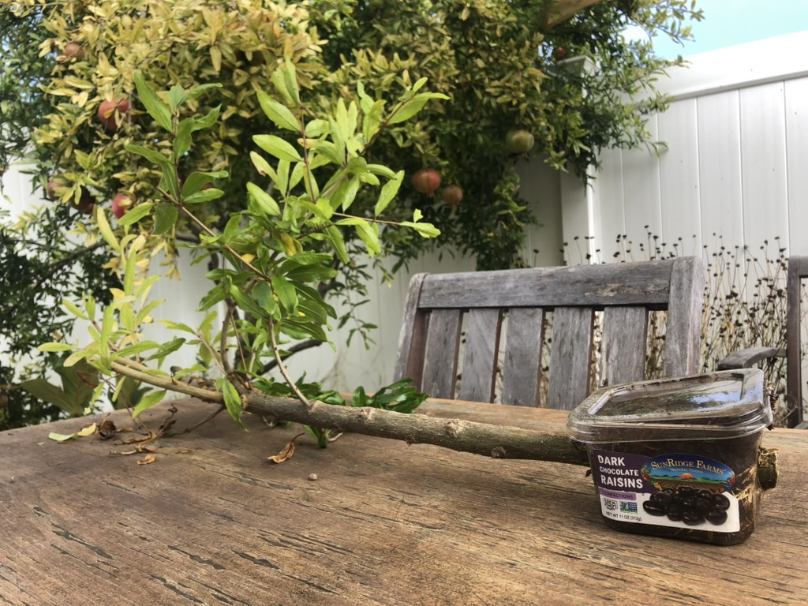
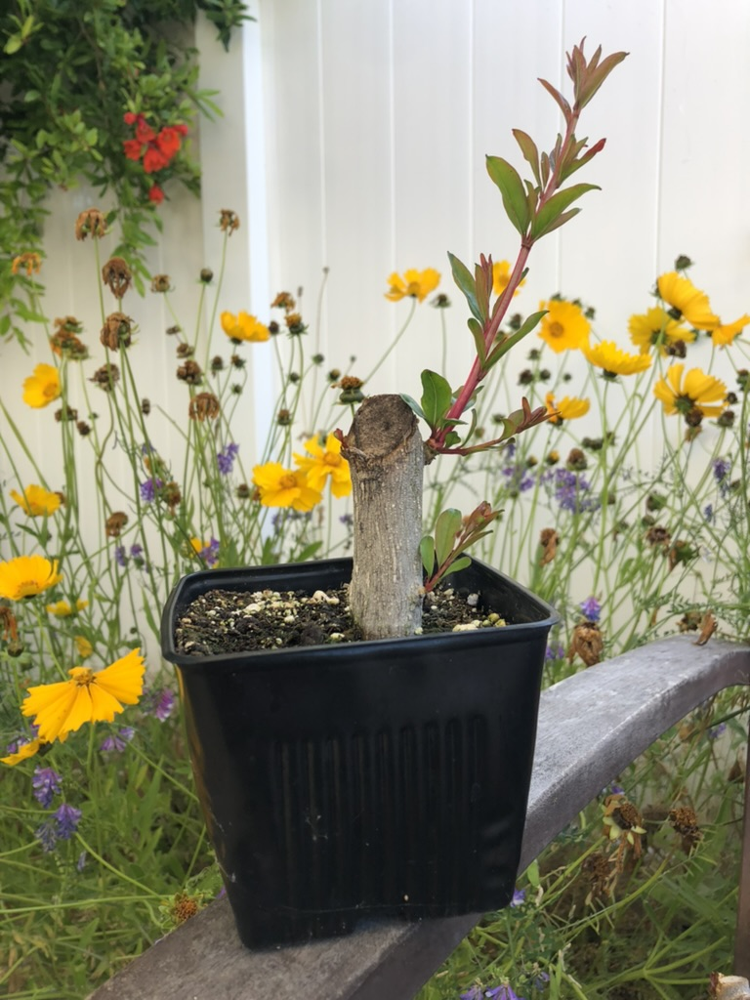
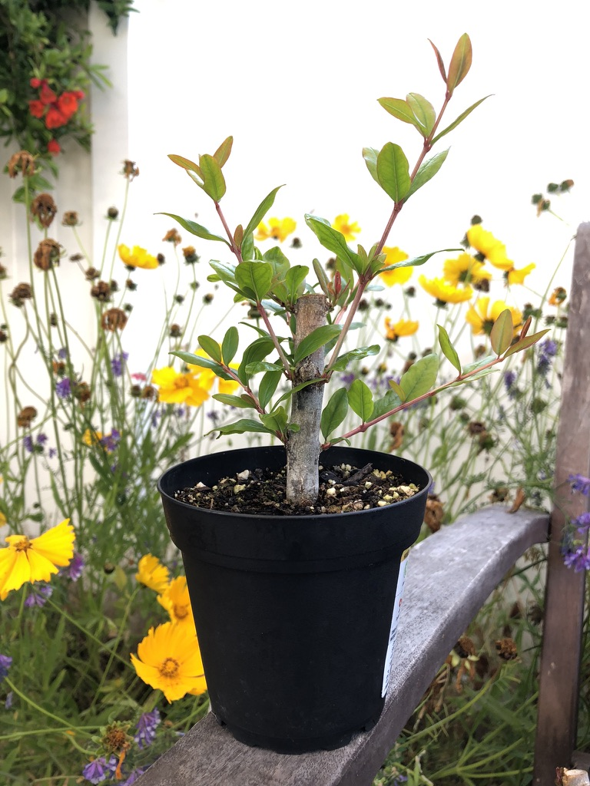
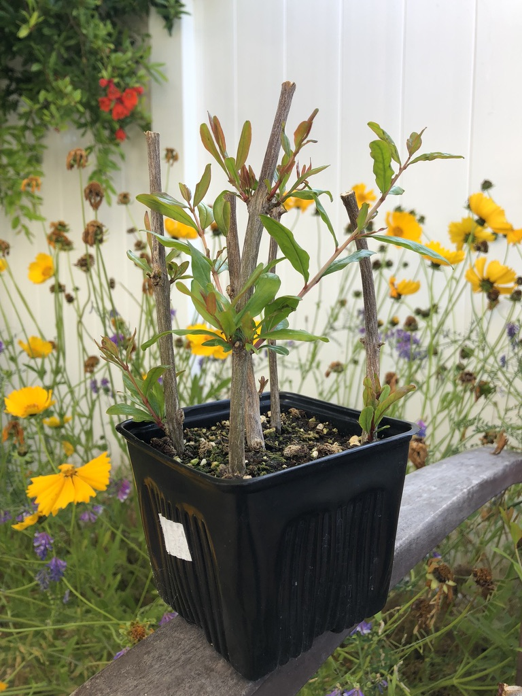

pomegranate propagation
I’ve had success propagating pomegranate trees by both cuttings and air layers. Below is the general process I follow for each.
air layer
The biology behind air layers is worth a read but I’ll just cover the basic steps here.
initial prep
In mid-summer get a sharp razorblade and make cuts like this picture. If you timed it well the bark should peel off very easily in step b. The end result should be a ring around the entire branch where bark is removed and inner layer is exposed.

Scrape the inner layer to remove the tissue responsible for nutrient transport. Alternatively you can apply isopropyl alcohol and leave the area exposed to open air for >24 hours which will kill the cells that would otherwise try to regrow the tissue.
Wrap some moistened rooting medium around the exposed trunk, secure with plastic wrap/packaging, and cover that with aluminum foil. For this tree I used 100% sphagnum peat moss which seems to have worked well.
This layer was on for roughly 4 months before these photos were taken. I did not water during that time and when I checked for these photos it was pretty dry.


removal
Wait to remove until the container is well packed with roots. In this case I waited ~4 months but it could be much longer if necessary. It is recommended to reduce foliage on the branch to stay balanced with the new root mass.


Stick it in a pot with soil taking care not to disturb the delicate roots. Best practice is to physically attach the trunk & pot to something steady for a few more months to reduce the risk of the trunk shifting and breaking roots before it’s settled into the new pot.
cuttings
Timing for cuttings is very flexible in my experience, though I generally aim for late winter or late spring depending on the thickness of branch I’m taking. Best success is had with cuttings at least pencil thickness though I’ve tried much thicker with high success rates.




Rooting media is any decent potting soil mixed with perlite and sphagnum peat moss. The goal is to retain moisture without getting waterlogged. Keep them in partial shade, protected from wind and they’ll start to grow within a month or so. Plant out in next spring.